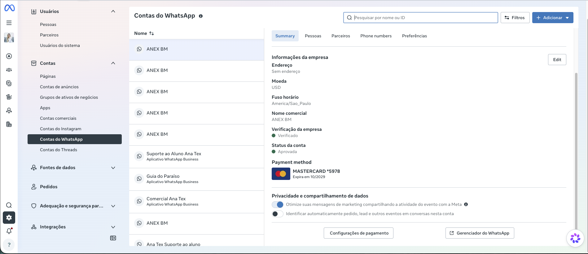
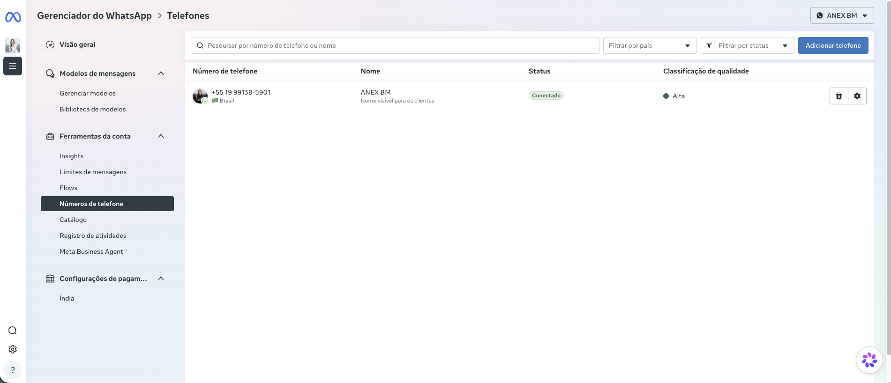
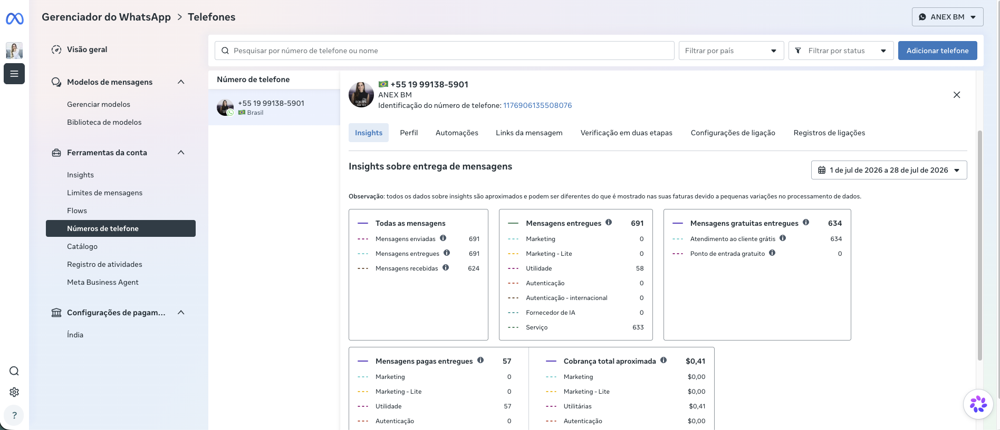
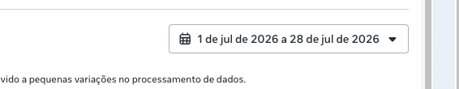

Passo a passo para consultar, dentro do Meta Business, quantas mensagens foram enviadas e quanto foi cobrado em cada número de WhatsApp conectado à conta.
Acesse o Meta Business Suite, entre em Configurações do Negócio e, na coluna da esquerda, clique em Contas do WhatsApp (dentro do grupo Contas).
A lista mostra todas as contas de WhatsApp do portfólio. Clique em uma para abrir os detalhes — é ali, na aba Summary, que também aparece o método de pagamento cadastrado (o cartão que é cobrado).

Ainda na tela da conta, clique no botão Gerenciador do WhatsApp (abre em uma nova aba). É lá que ficam os números e os resultados de cada um.
Dentro do Gerenciador, vá em Números de telefone. Você verá a lista de números com Status (Conectado) e Classificação de qualidade (Alta). Clique no número que quer consultar.

Ao clicar no número, ele abre com a aba Insights selecionada. Ali aparecem os cards de Todas as mensagens, Mensagens entregues, gratuitas, pagas e, o mais importante, Cobrança total aproximada — o valor efetivamente gasto naquele número.

No canto superior direito do painel de Insights tem um seletor de datas. Troque o intervalo (ex.: mês fechado, últimos 30/90 dias, ou datas específicas) para ver o gasto exatamente no período que você precisa.

A conta costuma ter vários números de WhatsApp conectados ao mesmo portfólio. O gasto é por número, não um total único da conta. Para saber o valor total gerado, é preciso repetir o Passo 4 e 5 — clicar em cada número, um por um — e somar as “Cobranças totais” de cada um.
Configurações do Negócio → Contas do WhatsApp → selecionar a conta → Gerenciador do WhatsApp → Números de telefone → clicar no número → aba Insights → ajustar o período → ver “Cobrança total aproximada”.
Os dados de Insights são aproximados e podem variar levemente em relação à fatura oficial — para o valor exato cobrado, a referência final é a fatura em Cobrança e pagamentos.